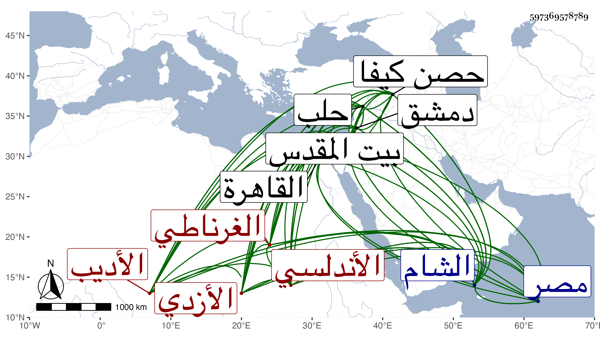

0902Sakhawi.DawLamic.ITO20230111-ara1.EIS1600.597369578789
Biography ID: 597369578789
1045
سهل بن إبراهيم بن أبي اليسر سهل بن أبي القسم محمد بن محمد بن سهل بن محمد بن سهل بن مالك بن أحمد بن إبراهيم أبو الحسن الأندلسي الغرناطي الأزدي الأديب . ذكره شيخنا في معجمه فقال : الأديب العلامة قدم علينا حاجا سنة أربع عشرة فحج ودخل الشام ثم رجع إلى القاهرة وحج ثانيا سنة ثمان عشرة ورجع فجالسني في إملاء شرح البخاري وبحث في مواضع لطيفة ثم أراد السفر إلى الشام فعرضت عليه شيئا من الزوادة فامتنع تعففا ، وبلغني سلامه وهو بدمشق ثم دخل حلب وكان قدومه لها كما قرأته بخط الشيخ برهان الدين المحدث سنة عشرين وتوجه منها قاصدا حصن كيفا ثم رجع إلى حلب بعد أن دخل عنتاب فأقام بحلب أياما ثم نزح عنها وانقطع خبره انتهى . وكان آخر العهد به سنة إحدى وعشرين ولما سافر من مصر ترك عند الجلال البلقيني رزمة ورق بخطه فيها تعاليق وفوائد فاستمرت عندهم ، ووقفت على شيء منها ومن جملتها سؤال أورده على الشمس الهروي ببيت المقدس فأجابه بجواب جازف فيه على عدته وأخذ الشيخ أبو الحسن يفنده وينبه على فساد مواضع فيه ، وذكر البرهان أيضا أنه أنشدهم لكل من شيخيه أبي الحسن علي بن الأزرق الغرناطي وأبي محمد عبد الله بن جزي وذكر أبياتا ولغيرهما قوله :
| منغص العيش لا يأوي إلى دعة | من كان ذا بلد أو كان ذا ولد |
| والساكن النفس من لم ترض همته | سكنى مكان ولم يركن إلى أحد |
وهو في عقود المقريزي
